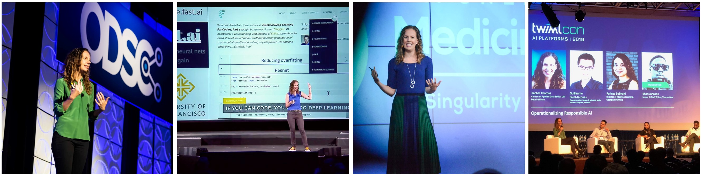

MSc Immunology student and cofounder of fast.ai
Past: professor & director of USF Center Applied Data Ethics, data scientist, wrote several book chapters on data ethics, one of Forbes 20 Incredible Women in AI, PhD in mathematics
Interests: mathematical biology, data ethics, and machine learning
Location: Queensland, Australia
Mathematical Biology and AI in Medicine
- A Mathematical Model of Glutathione Metabolism, Journal of Theoretical Biology and Medical Modeling
- Medicine’s Machine Learning Problem, Boston Review
- Earned a PhD in mathematics from Duke University
- Howard Hughes Medical Institute Fellowship
- keynote speaker at Stanford’s Artificial Intelligence in Medicine symposium
Data Ethics
- Professor of Practice at Queensland University of Technology Centre for Data Science
- Founding director of Center for Applied Data Ethics (CADE) at University of San Francisco
- Reliance on Metrics is a Fundamental Challenge for AI, Patterns. Optimizing metrics is a central aspect of most current AI approaches, yet overemphasizing metrics leads to manipulation, gaming, and a myopic short-term focus.
- Created and taught data ethics course
- Wrote ethics chapter of best-selling book,
- Wrote book chapters for:
Machine Learning and Data Science
- Co-founder of course.fast.ai
- Designed and taught graduate level courses on Natural Language Processing and Computational Linear Algebra in the USF Masters of Data Science program
- The New Era in NLP, Keynote at SciPy (Scientific Python) Conference 2019
- Keynote at ICML AutoML workshop, based on my popular series of AutoML posts
- Beginner friendly workshop on Word Embeddings (such as Word2Vec)
- Forbes 20 Incredible Women in AI
- Featured in book Women Tech Founders on the Rise
- Early data scientist and software engineer at Uber
